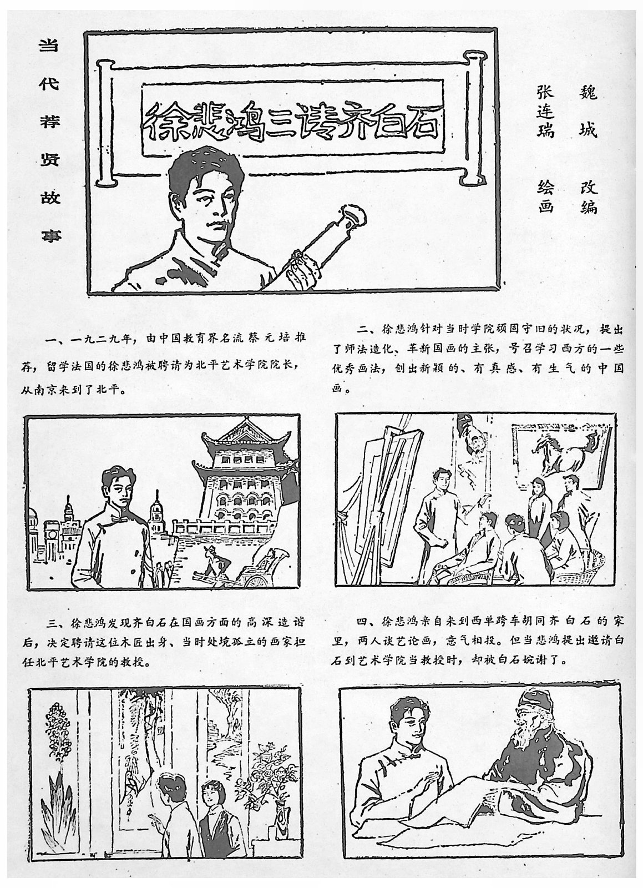

张连瑞绘画；魏城改编 《人事》1986年第5期（总第8期），封二
徐悲鸿三请齐白石
Xu Beihong Invites Qi Baishi Three Times
- Panel text
- 一九二九年，由中国教育界名流蔡元培推荐，留学法国的徐悲鸿被聘请为北平艺术学院院长，从南京来到了北平。
In 1929, on the recommendation of the eminent educator Cai Yuanpei, Xu Beihong, who had studied in France, was appointed president of the Peiping Art College and came from Nanjing to Peiping. - 徐悲鸿针对当时学院顽固守旧的状况，提出了师法造化、革新国画的主张，号召学习西方的一些优秀画法，创出新颖的、有真感、有生气的中国画。
Against the obstinate conservatism of the college at the time, Xu Beihong proposed learning from nature and renewing Chinese painting, calling for the study of the best Western methods to create a Chinese painting that was fresh, true to life and full of vitality. - 徐悲鸿发现齐白石在国画方面的高深造诣后，决定聘请这位木匠出身、当时处境孤立的画家担任北平艺术学院的教授。
Having discovered Qi Baishi's profound attainments in Chinese painting, Xu Beihong decided to hire this painter — a former carpenter, isolated at the time — as a professor at the Peiping Art College. - 徐悲鸿亲自来到西单跨车胡同齐白石的家里，两人谈艺论画，意气相投。但当悲鸿提出邀请白石到艺术学院当教授时，却被白石婉谢了。
Xu Beihong went in person to Qi Baishi's home in Kuache Hutong, Xidan. The two talked art and painting and found themselves kindred spirits. But when Beihong invited Baishi to become a professor at the college, Baishi politely declined.
- 一九二九年，由中国教育界名流蔡元培推荐，留学法国的徐悲鸿被聘请为北平艺术学院院长，从南京来到了北平。
- Description
- Picture story, panels 1–4: in 1929 Xu Beihong, head of the Peiping Art Academy, seeks out the self-taught carpenter-turned-painter Qi Baishi and is at first refused.
- Note
- From the series 当代荐贤故事 ('modern stories of recommending the worthy').
- Artists
- Zhang Lianrui 张连瑞 (drawn); Wei Cheng 魏城 (adapted)
- Published in
- 《人事》1986年第5期（总第8期）, inside front cover
- Themes
- Talent and its neglect · Exemplary history · Picture stories (连环画)

Cite
Zhang Lianrui and Wei Cheng, “徐悲鸿三请齐白石” [Xu Beihong Invites Qi Baishi Three Times], Renshi (Personnel) 《人事》, 1986, no. 5, inside front cover.